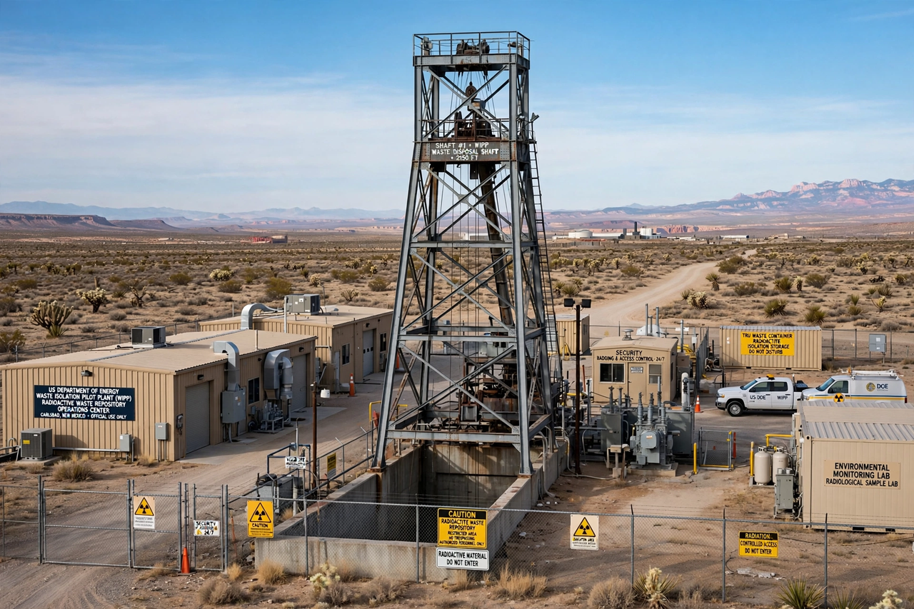

| Waste Isolation Pilot Plant | |
|---|---|
 WIPP surface facilities near Carlsbad, New Mexico | |
| Location | Eddy County, New Mexico, ~26 miles (42 km) east of Carlsbad |
| Operator | U.S. Department of Energy |
| Repository depth | 655 m (2,150 ft) in the Salado Formation salt bed |
| Waste type | Transuranic (TRU) waste from nuclear weapons production |
| Operations began | March 26, 1999 |
The Waste Isolation Pilot Plant (WIPP) is a deep geological repository in Eddy County, New Mexico, operated by the United States Department of Energy for the permanent disposal of transuranic radioactive waste generated by the nation's nuclear weapons research and production. It is the world's first deep geological repository licensed to permanently dispose of such waste, and the only one operating in the United States.
Waste is emplaced in rooms excavated 655 metres underground in the Salado Formation, a 250-million-year-old bedded salt formation (a Permian evaporite sequence comparable to the Zechstein of Europe). Salt was chosen because it is effectively impermeable, has remained stable for geological timescales, and creeps plastically, gradually closing the excavated rooms and sealing the waste within the formation. Drums and boxes of waste—clothing, tools, sludges, and debris contaminated with plutonium and other transuranic elements—are stacked in disposal rooms, backfilled with crushed salt, and ultimately entombed as the salt closes around them.
The site was selected in the 1970s after studies of salt disposal near Lyons, Kansas, were abandoned. Congress authorized WIPP in 1979; construction began in 1981, and the first waste shipment arrived from Los Alamos National Laboratory on March 26, 1999. The statutory capacity is 175,564 cubic metres of transuranic waste.
In February 2014 an underground vehicle fire was followed nine days later by a radiological release when a waste drum from Los Alamos—packed with an incompatible organic absorbent—ruptured, contaminating part of the underground and exposing workers to low levels of radiation. Operations were suspended for nearly three years; shipments resumed in April 2017, and the event prompted nationwide reforms in waste characterization and packaging.
Because the waste remains hazardous for tens of thousands of years, WIPP has been a leading case study in designing warning markers and messages intended to deter inadvertent human intrusion for 10,000 years.
Deep geological repository · Transuranic waste · Yucca Mountain repository · Zechstein